Operating Documentation
Direction 5670006, Rev# 1
Discovery MR750w GEM Service Methods
Module Version 1.0, Version Date 6/30/11
Operating Documentation |
The procedures that follow are used to replace GEM Field Replaceable Units (FRUs).
Follow this procedure to replace either the Phased Array (PA) Coil or PA Filler.
| Required Persons | Procedure Timing |
| 1 | 60 min. |
| Item | Qty |
| Flat-head Screwdriver | 1 |
| Phillips-head Screwdriver | 1 |
| Item | FRU Part Number | Qty | |
| 1.5T GEM PA Coil | Refer to FRU manual for part numbers. | 1 | |
| 3.0T GEM PA Coil | 1 | ||
| 1.5T GEM PA Filler | 1 | ||
| 3.0T GEM PA Filler | 1 | ||
| ||||
| The patient table cannot be docked to the system to perform a PA Coil or PA Filler replacement. | ||||
Remove the patient table from the Magnet Room, and lock the wheels on the table to prevent it from moving.
Locate the front of the patient table and the buttons. Push the button labeled 1 down toward the floor while pushing the button labeled 2 in.
Illustration 1: Location of Table Buttons
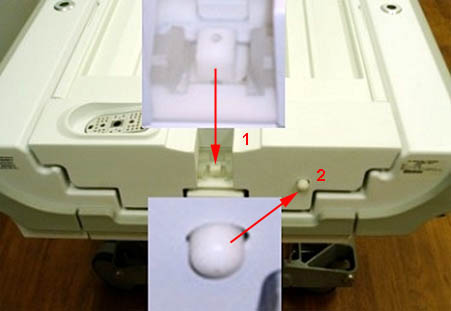
Continue pushing in both buttons, and pull the cradle toward you until a click is heard and the cradle stops moving.
Illustration 2: Pulling Cradle
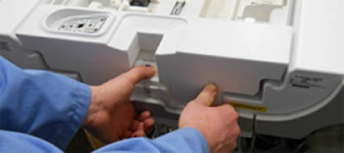
Lift up on the center of the cradle, and pull the cradle toward you until the rear of the cradle clears the cradle guide rails.
Illustration 3: Cradle Guide Rails
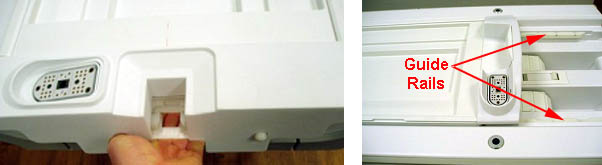
Locate the rear of the cradle, remove the two inner screws with a Phillips-head screwdriver, and lift the plastic cradle cover out.
Illustration 4: Removing Cradle Cover
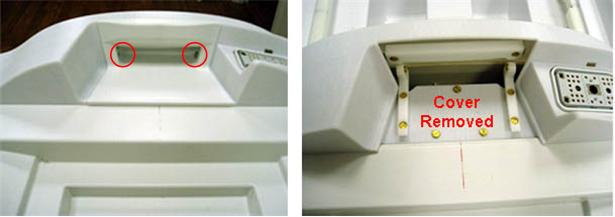
Lift the rear of the cradle, and remove the screw on the left and right side of the cradle.
Illustration 5: Screw Location Cradle (Right Side Shown)
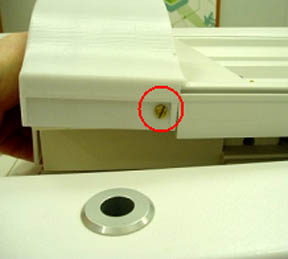
Remove the upper two screws on the plastic pieces and rotate them as shown.
Illustration 6: Screws and Plastic Pieces
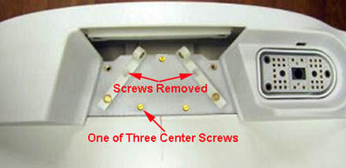
Remove the three center screws shown above; lift and remove the rear section of the cover from the cradle.
Illustration 7: Rear Section of Cradle Cover Removed
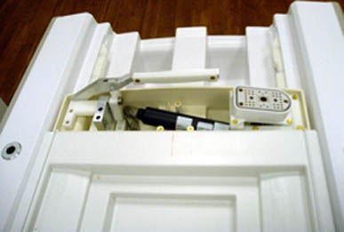
Remove the left and right strap rails by sliding each from the middle and front sections of the cradle. (To make it easier to remove the strap rails, release the cradle from the guide rails and lift it toward the back of the table.)
Illustration 8: Removing Left and Right Strap Rails

Lift up on the on the cradle as shown in Illustration 3 and push it back into position.
| ||||
| Before performing the next task, make sure the surface is clear of all materials such as any screws, tools or plastic parts previously removed. | ||||
Remove the cradle cover by lifting up and sliding the cover out from the front of the cradle.
Illustration 9: Removing Cradle Cover
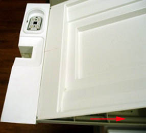
Remove the shoulder screw, and flex the cotton rod at the front section of the cradle to remove it. (Do not to lose any of the four compression springs.)
Illustration 10: Removing Shoulder Screw
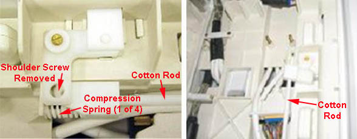
Remove the two screws securing the end rib over the cables near the rear of the table, and unplug the system cables from the PA Coil or PA Filler.
Illustration 11: Removing Screws on End Rib
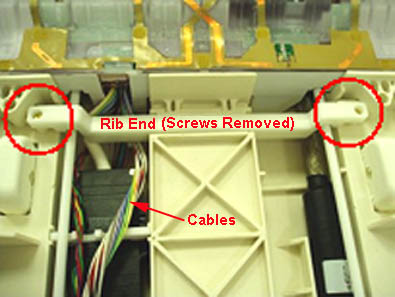
Remove the six screws from the PA Coil or PA Filler, and remove the coil or filler from the table.
Illustration 12: Removing Screws on PA Coil or Filler
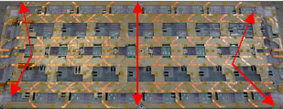
Place the replacement PA Coil or PA Filler into the table, and orient so the cable faces the end of the table labeled REAR.
Illustration 13: Table End Labeled Rear
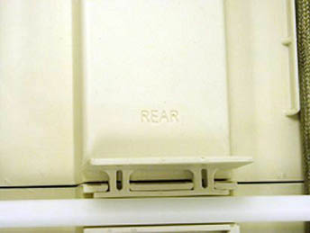
Connect the cables from the PA Coil or PA Filler to the cables in the table; see illustration below for cable routing. (The PA Filler will only have the J4 cable.) Ensure the spacer bracket is properly oriented.
Illustration 14: Connecting PA Cables to Table Cables
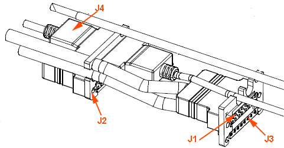
Lift the PA Coil or PA Filler slightly to reinstall the cotton rod (shown in Illustration 10) by flexing it back into position on the cradle. Ensure cables and cotton rod with springs are properly seated properly, and reinstall the shoulder screw.
Reinstall the end rib with two screws shown in Illustration 11.
Resecure the PA Coil or PA Filler to the table with six screws shown in Illustration 12.
Place the cradle cover on the cradle, ensuring the front edge of the cover slides into the groove of the cradle’s front section and lower the cover onto the cradle.
Illustration 15: Replacing Cradle Cover
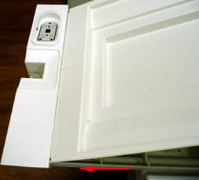
Refer to Illustration 1. Locate the front of the patient table and the buttons. Push the button labeled 1 down toward the floor while pushing the button labeled 2 in.
Continue pushing in both buttons, and pull the cradle toward you (as shown in Illustration 2) until a click is heard and the cradle stops moving.
Refer to Illustration 3. Lift up on the center of the cradle, and pull the cradle toward you until the rear of the cradle clears the cradle guide rails.
Reinstall the left and right strap rails (shown in Illustration 8) by sliding from the middle and back sections. Ensure there is no gap between the strap rails and the cradle front section.
Illustration 16: Eliminating Gap Between Strap Rails and Cradle
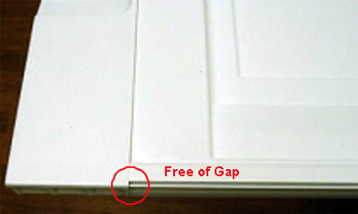
Reinstall the rear section cover housing, and secure with the screws as shown. Ensure the cradle cover slides into the groove of the cover housing.
Illustration 17: Reinstalling Rear Cradle Cover
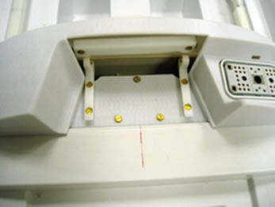
Lift the rear of the cradle, and reinstall the screws on the left and right side of the cradle shown in Illustration 5.
Reinstall the last cover with the two inner screws shown on the left in Illustration 6.
Lift up on the on the cradle and push it back into position.
Illustration 18: Positioning Cradle
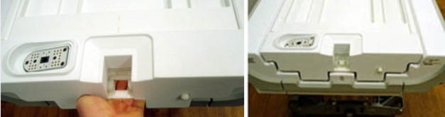
Perform the appropriate test depending on whether the PA Coil or PA Filler was replaced:
For the PA Coil: Run the Multi-Coil Quality Assurance Tool to verify that the coil operates properly.
For the PA Filler: Perform a functional check to ensure the system recognizes that the filler is connected.
Follow this procedure to replace the system cable on the HNU Coil.
Illustration 19: HNU Coil
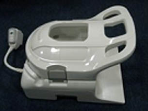
| Required Persons | Procedure Timing |
| 1 | 45 mins |
| Item | Qty |
| Flat-head Screwdriver | 1 |
| Pliers | 1 pair |
| Side Cutters | 1 pair |
| Item | FRU Part Number | Qty |
| 1.5T GEM HNU System Cable | Refer to FRU manual for part numbers. | 1 |
| 3.0T GEM HNU System Cable | 1 |
Remove the anterior section of the HNU Coil if connected.
Illustration 20: Anterior Section Removed
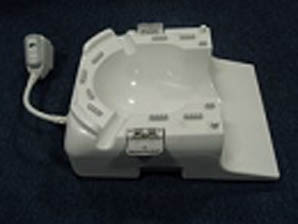
Position the posterior section of the coil to expose the bottom cover and screws.
Remove the 16 screws from the bottom cover of the posterior section, and segregate the four shorter screws (shown below) from the other screws.
Illustration 21: Location of Screws on Bottom Cover
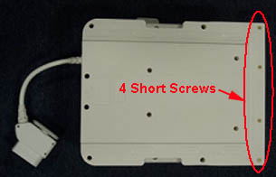
Remove the RF Connectors labeled J8, J2 and J11 by pulling each out in a horizontal direction.
Illustration 22: Location of RF and Coil ID Connectors

Remove the single DC Connector labeled J64, located in the bottom left corner, by using pliers and pulling straight up from the board.
Illustration 23: Removing DC Wire Connector J64
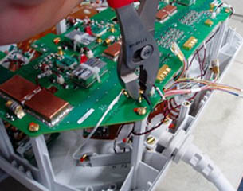
Remove the twisted pair DC Connector labeled J83 (shown below) by pushing in on the clip and pulling the connector straight up from the board.
Illustration 24: Location of DC Connector J83
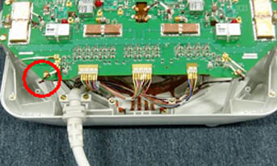
Remove the Coil ID Connector labeled J54, located under the board in the lower right corner, by pushing in on the clip and pulling downward on the connector.
Illustration 25: Location of Coil ID Connector J54
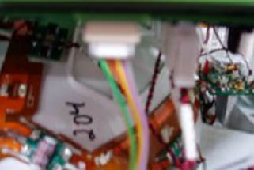
Use the side cutters to snip off the zip tie.
Illustration 26: Snipping Zip Tie
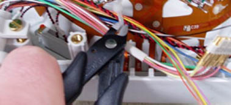
Remove the two screws holding the system cable to the clamp.
Illustration 27: Removing Cable Clamp Screws
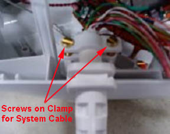
Place the new system cable on the HNU Coil with the flat side of the strain relief facing up and the curved side facing down, and secure in the cable clamp with the screws just removed.
Illustration 28: Flat Side of Strain Relief Facing Up
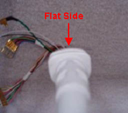
Reconnect the DC Cable labeled J54 on the underside of the board (shown in Illustration 25), ensuring the clip is facing out prior to connecting. (An audible sound will be heard when the connector is properly seated.)
Reconnect the single DC Connector labeled J64.
Illustration 29: Location of DC Connector J64
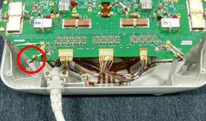
Reconnect the twisted pair DC Connector labeled J83 (shown in Illustration 24), ensuring the clip of the connector is facing out. (An audible sound will be heard when the connector is properly seated.)
Reconnect the RF Connectors labeled J8, J2 and J11 to the correct locations on the board as shown in Illustration 22, and use a zip tie to secure the cables in this location.
Replace the posterior cover on the HNU Coil, ensuring the cables will not be pinched when the cover is placed on the coil.
Secure the cover with the 16 screws removed earlier.
Ensure the shortest screws are located away from the system cable as shown in Illustration 21.
Run the Multi-Coil Quality Assurance Tool to verify the HNU Coil operates properly.
Follow this procedure to replace the system cable on the PV Coil.
| Required Persons | Procedure Timing |
| 1 | 45 mins |
| Item | Qty |
| Flat-head Screwdriver | 1 |
| Item | FRU Part Number | Qty |
| 1.5T GEM PV System Cable | Refer to FRU manual for part numbers. | 1 |
| 3.0T GEM PV System Cable | 1 |
Position the PV Coil to expose the screws on the posterior section of the coil, and remove the seven screws closest to the system cable. (Do not remove the eight screws opposite of the system cable.)
Illustration 30: PV Coil

When removing the screw on the end, do not allow the latch catch (shown below) to fall from the coil. Set it aside for use later in the procedure.
Illustration 31: Latch Catch
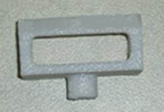
Rotate the PV Coil to expose the anterior section of the coil. (The anterior cover should no longer be attached.)
Remove the DC Connectors labeled J3 and J38 by pushing in on the clip and pulling the connectors straight up from the board.
Illustration 32: DC Connectors J3 and J38

Remove the RF Connectors labeled J33, J34, J35 and J36 by pulling straight up from the board.
Illustration 33: RF Connectors J33, J34, J35 and J36

Place the new system cable on the PV Coil, ensuring that the flat side of the strain relief is facing down, and reconnect the RF Connectors labeled J33, J34, J35 and J36.
Illustration 34: Flat Side of Strain Relief Facing Down

Reconnect the DC Connectors labeled J3 and J38 (shown in Illustration 32), ensuring they are properly oriented before plugging them in. (An audible sound will be heard when the connectors are properly seated.)
Reinstall the anterior cover on the PV Coil and secure with the six of the seven screws removed earlier (Illustration 30).
Reinstall the latch catch and the seventh screw on the anterior cover. The post of the latch catch will fit into the anterior section of the coil and can be positioned in one direction.
Illustration 35: Placement of Latch Catch Post

Run the Multi-Coil Quality Assurance Tool to verify the PV Coil operates properly.
This procedure is used to replace the latch and latch catch on the PV Coil.
| Required Persons | Procedure Timing |
| 1 | 45 mins |
| Item | Qty |
| Flat-head Screwdriver | 1 |
| Item | FRU Part Number | Qty |
| GEM PV Latch Kit | Refer to FRU manual for part numbers. | 1 |
Position the second station of the PV Coil to expose the screws; remove the 13 screws on the main portion and the 8 screws from the hinge area. Segregate the 8 screws from the hinge area (shown below) as they are a different size than the other cover screws.
Illustration 36: Location of Screws on Second Station
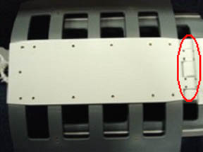
| NOTE: | Prior to lifting the second station, make sure to release the latch. |
Remove the cover and locate the three latch screws and remove them.
Illustration 37: Location of Latch Screws
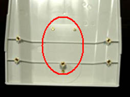
Reinstall new latch and secure with the three screws removed in the previous step.
Reinstall the cover and secure with the all the screws removed earlier (Illustration 36). Remember that the screws on the hinge area are smaller in size compared to the rest of the cover.
Position the PV Coil to expose the screws on the posterior section of the coil. Remove the end screw, and detach the latch catch from the coil.
Illustration 38: Location of End Screw on Latch Catch

Install the new latch catch and secure with the end screw. (The post of the latch catch will fit into the anterior of the coil and in one direction as shown in Illustration 35.)
Run the Multi-Coil Quality Assurance Tool to verify the PV Coil operates properly.